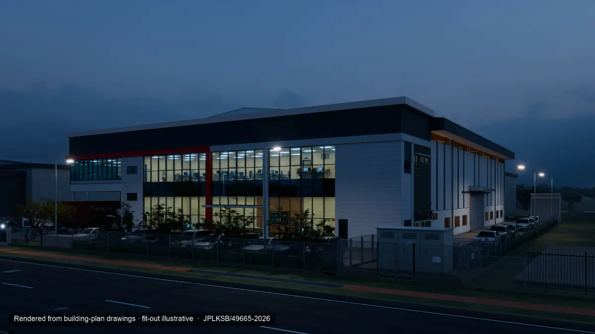
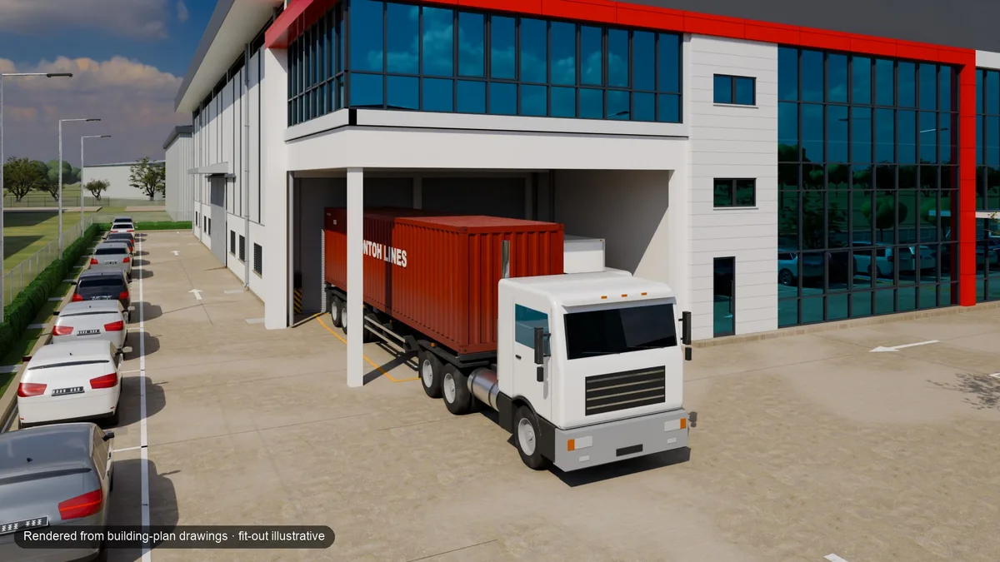
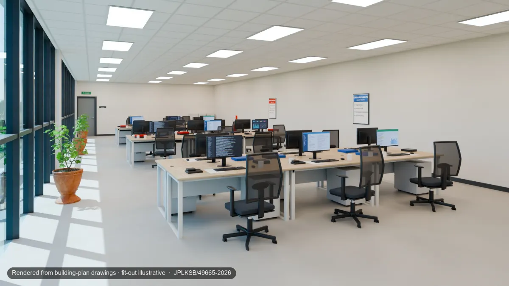
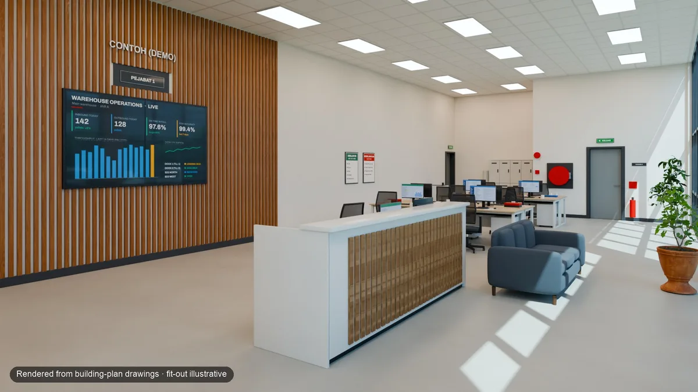

A building described on paper.
The building-plan sheets described the site, factory and office. We used the JUN 2026 drawing set, submitted, not yet approved.
Case studyDemonstration projectIndustrial building
A factory hall and two-storey office brought into one presentation. Walk the layout, compare illustrative fit-outs and check key dimensions against the plans. Demonstration project, not client work, not offered for sale or rent through Idyra.
Drawing set Demonstration drawing set (JUN 2026; submitted, not yet approved). Construction status: owner to confirm. Fit-outs are illustrative. The agency on the sample share page is fictional.

 As per plan
Logistics fit-out
As per plan
Logistics fit-out
Move the divider: the building as drawn, then a possible logistics fit-out. Same building and camera.
Step inside the modelFigures as printed on the sheets, rounded to 1 m² and 0.1 m; the square-foot figure is converted from m². The references give the drawing sheet and page of the set.
The demonstrationInput → model → presentation
A worked example of our process, with its limits visible. These are demonstration outputs; package inclusions differ.
The building-plan sheets described the site, factory and office. We used the JUN 2026 drawing set, submitted, not yet approved.
We built a to-scale model from the drawing facts, then added labelled logistics and light-manufacturing fit-outs. Switching states keeps the building as drawn separate from possible uses.
A walkable model, 10 stills, a 15 s film with 3 portrait framing variants, a referenced spec sheet and a sample share page. Explore the layout, compare views and look up the source of a dimension.
103 recorded checks passed: 101 dimensions within 0.1 m of the drawings and 2 exact counts. 5 items remain marked for site verification.
This demonstrates the output and checking process. It is not evidence of customer revenue, faster sales or an as-built survey.
Stills10 path-traced · 9 as-per-plan pairs
Rendered with Cycles at 1920 × 1080. Use the switch under a still to see the same camera as per plan: the building, site and landscape as drawn, with no fit-out, cars or people.








The 40-ft trailer in the loading-bay view is there for illustration; trailer access and turning have not been checked (owner to confirm). Operation-ready views show illustrative uses only: whether a use is allowed depends on the land title and planning approval.
Film15 s master · 3 vertical cuts
This 15-second demonstration film follows three camera moves through the drawing-built model. The portrait versions use different framing of the same sequence. Fit-outs are illustrative; no shot in this film is AI-animated.

Native camera moves through the drawing-built model. Every shot is labelled; fit-out is illustrative. No AI-animated footage.
A 15 s portrait version of the same three-shot sample (0:00.0–0:15.0). The three portrait versions use different framing, not different projects.

A 15 s portrait version of the same three-shot sample (0:00.0–0:15.0). The three portrait versions use different framing, not different projects.
A 15 s portrait version of the same three-shot sample (0:00.0–0:15.0). The three portrait versions use different framing, not different projects.
Walk-in 3D3 states · tap-to-measure
The interactive to-scale model runs in the browser. Switch between as per plan, logistics and light manufacturing, walk inside, and tap two points to measure to 0.1 m. This is the interim model, without the path-traced lighting of the stills.
The 3D model works better on a desktop; on a phone it can take 10–15 seconds to become interactive.
Loads here · about 1.5 MB
In a simulated test (4G link, phone-sized screen, CPU slowed 4×, run on a Mac and not yet on a real phone), our newer web build starts painting in about 1.5 s, but its 3D becomes interactive only after 11–13 s. The interim model shown here has not been timed. Our target is a first view in under 5 s.
AccuracyModel against drawings
A test harness drew 20 of the 101 dimensions at random and measured the same spans on the model: all 20 came within 0.1 m. The whole pool passed too: 101 dimensions within 0.1 m and 2 counts exact.
The drawings cannot settle these 5 items, so they are marked to verify on site:
The harness caught two errors of ours, both fixed in the model: steel stanchions set 0.15 m inside the wall line instead of on their grid line, and the width of the water-meter compartment. The stills were rendered before the stanchion fix; the offset is not visible at their scale.
This check compares our model with the drawings it was built from. It is not a survey of the building, and the building may differ from its drawings.
Model geometry checked by Idyra against building-plan drawing set Demonstration drawing set (JUN 2026; submitted, not yet approved). Furnishing, equipment and people are illustrative (modelled or AI-visualised, as labelled). Not as-built, not a survey, and not a certification or approval by any authority, architect or engineer.
Deliverables
| Deliverable | Status | Notes |
|---|---|---|
| Path-traced stills | Done | 10 at 1920 × 1080, 9 as-per-plan pairs |
| Film | Done | 15 s native-camera sample and 3 portrait framing variants, labels burned in |
| Walk-in 3D model | Partly done | 3 labelled states and tap-to-measure work; baked lighting is still to come |
| Spec sheet | Done | 4 pages, every line checked against the verified facts. Open the sample (PDF) |
| Share page | Done | A private demo with a fictional agency, labels on every visual and a WhatsApp card |
| Building-facts assistant | Pilot | 80% on 50 unseen questions (target 95%); no invented figures and no price talk in any test |
| Blind comparison with studio renders | Not run yet | Until it runs, we make no claim about how our images compare with a studio's |
Made with AI-agent sessions (several workflows often ran in parallel), plus the founder's review and rendering that ran overnight on one laptop.
Start a project brief in the app or email us, and say whether you have the drawings. We will tell you which package fits. Please don't send drawings before an order form is signed.